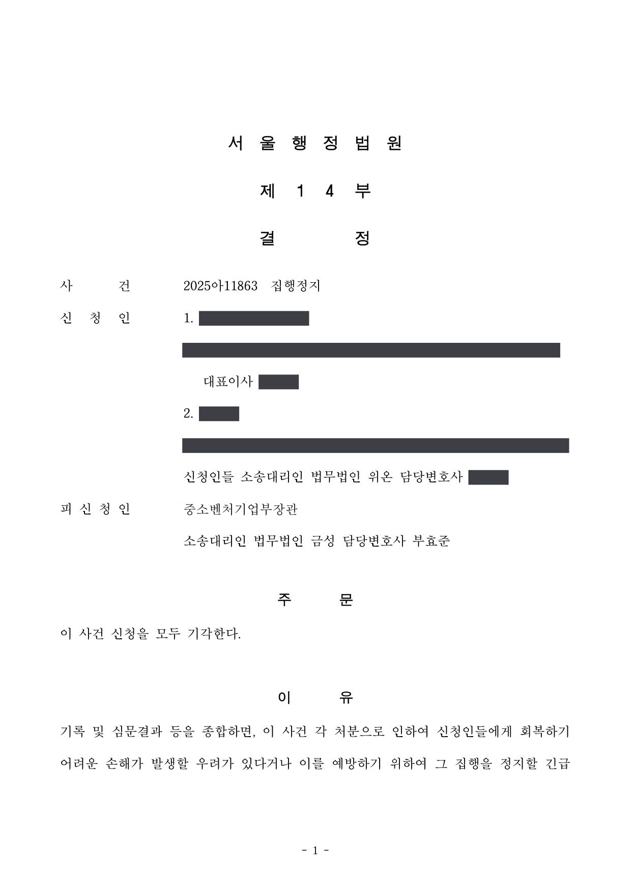

국가연구개발사업 참여제한·제재부가금 부과처분 취소소송 및 집행정지
서울행정법원 2025구합54132 · 2025아11863 · 담당변호사 부효준
판결문


사건의 요지
블록체인 기술을 활용한 금융거래 중개 플랫폼 개발 과제가 최종평가 20점(현장점검대상)과 재평가 45점으로 '극히 불량' 판정을 받아 내려진 2년 참여제한처분과 정부지원연구개발비 전액 상당의 제재부가금 부과처분에 관하여, 혁신법령상 평가방법과 관리지침의 적용 시점, 시험성적서 단위 표기와 취약점 평가의 타당성, 온라인 점검의 신뢰보호원칙 위반 여부가 다투어진 사건입니다. 집행정지 신청은 받아들여지지 않았고, 본안에서도 처분이 모두 적법하다고 판단되었습니다.
사건의 주요 내용
소프트웨어 개발업을 하는 원고 회사는 2020년 중소기업 기술개발사업에 블록체인 기술을 활용한 금융거래 중개 플랫폼 개발 과제를 신청하여 선정되었고, 2020년 12월 전문기관과 협약을 체결한 뒤 2020년 12월 말부터 2022년 12월 말까지 2년 동안 과제를 수행하여 결과물을 완성하였습니다. 정부출연금은 3억 6,000만 원이었습니다.
2023년 3월 최종보고서가 제출된 뒤 같은 해 4월 최종평가에서 과제는 20점으로 '현장점검대상(최종점검)' 판정을 받았고, 8월 온라인 최종점검을 거쳐 재평가 대상으로 분류된 다음 11월 최종평가 재평가에서 45점으로 '극히 불량' 판정을 받았습니다.
처분청은 제재처분심의위원회 심의, 사전통지, 연구자권익보호위원회 재검토 등을 거쳐 2025년 3월 '연구개발과제의 수행과정과 결과가 극히 불량한 경우'에 해당한다는 사유로 원고 회사와 대표이사에게 각 2년의 참여제한처분을, 원고 회사에 정부지원연구개발비 전액에 해당하는 제재부가금 353,457,281원(정부출연금 3억 6,000만 원에서 자동회수금과 민간추가납부금을 뺀 금액) 부과처분을 하였습니다. 원고들은 각 처분의 취소를 구하는 소송을 제기하면서 집행정지를 신청하였습니다.
원고의 주장
- 기술개발 과제의 수행과정과 성과를 동시에 평가하도록 한 국가연구개발혁신법령상의 평가방법과 등급분류 기준을 따르지 않았고, 협약 체결 당시의 관리지침에는 '극히 불량' 등급의 평가기준 자체가 없으므로, 부적절한 근거에 기초한 최종평가와 그에 따른 처분은 위법하다고 주장하였습니다.
- 응답률·지연시간 항목은 제출한 시험성적서의 표시 단위만 바꾸었다면 사업계획서의 목표지표를 충족한 것으로 인정될 수 있었고, 취약점 항목은 블록체인 기술 과제를 성격이 다른 일반 핀테크 기준으로 평가한 것이며, 산출물이 기술신용평가에서 상위 등급을 받고 현장에서 정상 작동하고 있으므로 '매우 미흡'이라는 평가는 부당하다고 주장하였습니다.
- '현장점검대상' 통지를 받았는데도 실제 현장점검 없이 온라인 점검만 거쳐 재평가로 나아간 것은 현장점검에 관한 정당한 신뢰를 침해한 것이고, 처분은 재량권을 일탈·남용한 것이라고 주장하였습니다.
부효준 변호사의 주장
- 국가연구개발혁신법은 2021년 1월 1일 시행되어 제4조에 따라 국가연구개발사업의 추진에 관하여 다른 법률에 우선하여 적용되므로, 그 이후에 이루어진 최종평가에는 혁신법령의 평가사항과 등급분류가 적용되며, 평가위원별 최종평가표에 기재된 평가지표의 내용만 보더라도 수행과정과 성과를 따로 평가하였다는 주장은 이유 없다고 반박하였습니다.
- 블록체인 기술을 활용한 과제인 만큼 평가위원의 전문성과 공정성이 중요하다는 점을 전제로, 최종평가위원회, 최종평가 재평가위원회, 제재처분심의위원회, 연구자권익보호위원회 위원들의 소속·경력·전공을 검토하여 그 전문성이나 공정성을 의심할 사정이 없음을 밝히고, 고도의 전문적·기술적 사항에 관한 판단은 존중되어야 한다는 대법원 판례에 따라 처분사유가 인정된다고 주장하였습니다.
- 원고들 스스로 수요자 만족도 달성도가 30%에 그치고 일부 항목이 누락된 시험성적서를 제출하였으며 취약점 지적에 대한 구체적 반박도 없으므로 성과 평가가 부당하다고 볼 수 없고, 온라인 점검은 관리지침에 따른 것으로서 종합관리시스템 전자알림방으로 통지되었으므로 신뢰보호원칙 위반이 아니며, 처분은 시행령 [별표 6]·[별표 7]의 기준을 그대로 따른 것이어서 재량권 일탈·남용이 없다고 주장하였습니다.
법원의 판단
법원은 고도의 전문적·기술적 사항에 관한 행정청의 판단은 특별한 사정이 없는 한 존중되어야 한다는 대법원 판례(2022. 9. 16. 선고 2021두58912 판결)를 전제로, 4인의 최종평가위원회가 5개 평가지표로 평가하여 현장점검대상으로 판정하고 온라인 최종점검과 5인의 재평가위원회 평가(45점)에 성실수행평가를 더하여 '극히 불량'으로 판정한 과정이 관계 법령의 절차와 기준을 지킨 합리적인 것이며, 평가위원들도 충분한 전문성을 갖추었다고 보았습니다.
평가방법에 관하여는, 2021년 1월 1일 이후의 평가에는 국가연구개발혁신법이 적용되고, 수행과정과 결과를 함께 보아 양자가 모두 매우 미흡하다는 이유로 '극히 불량'으로 판정한 것은 혁신법 시행령 제16조의 평가사항과 등급분류에 그대로 부합하며, 평가위원별 최종평가표의 평가지표만 보더라도 성과와 수행과정을 따로 평가한 것이 아님이 분명하다고 하였습니다. 협약 체결 당시가 아니라 혁신법령의 평가 체계가 반영된 평가 당시의 관리지침을 적용한 것도 부적절하지 않다고 보았습니다.
성과 평가에 관하여는 원고들 스스로 수요자 만족도 달성도가 30%에 그치고 응답률·지연시간 항목이 누락된 시험성적서를 제출하였으며, 취약점 지적에 대하여 블록체인과 핀테크의 차이만 막연히 주장할 뿐 구체적 반박이 없고, 변론기일의 기술 시연으로도 평가를 뒤집을 사항이 확인되지 않았다고 하였습니다. 연구노트도 '개발 방안'은 있으나 '연구데이터' 등 '개발 과정'의 기재가 미흡하다고 보았습니다.
온라인 점검에 관하여는 법령상 현장점검을 반드시 실시하라는 규정이 없고 관리지침이 필요시 온라인 점검을 허용하며 종합관리시스템 전자알림방으로 통지되었는데도 확인하지 못한 귀책사유가 원고들에게 있다고 보아 신뢰보호원칙 위반을 부정하였고, 처분기준을 그대로 따른 양정은 재량권 일탈·남용이 아니라고 보아 원고들의 청구를 모두 받아들이지 않았습니다. 앞서 집행정지 신청(2025아11863)도 회복하기 어려운 손해나 긴급한 필요가 인정되지 않는다는 이유로 모두 받아들여지지 않았습니다.
이 사건 과제의 최종평가 방법은 과제의 '수행과정'과 '결과'를 중심으로 최종목표 달성도, 사업화 가능성 등의 평가지표별 점수를 종합하여 연구개발과제의 수행과정과 성과 모두 매우 미흡하다는 이유로 '극히 불량' 판정을 내린 것으로서, 위와 같은 국가연구개발혁신법령의 평가 관련 규정 내용과 취지에 그대로 부합한다. 원고들은 피고가 '기술개발성과'를 먼저 평가한 후 '성실수행 평가지표'에 따른 '수행과정의 불성실성'을 그 이후에 평가하는 과거 방식을 택하여 수행과정과 성과를 동시에 평가하도록 한 국가연구개발혁신법령의 취지를 몰각시켰다는 취지로 주장하나, 평가위원별 최종평가표에 명시적으로 기재된 평가지표의 내용만 보더라도 원고들 주장과 같은 방법으로 평가가 이루어진 것이 아님은 분명하다.
서울행정법원 2025구합54132 판결 이유 '3. 가. 처분사유 인정 여부 — 2) 나) (2)'
그러나 원고들이 스스로 '수요자 만족도 달성도'가 30%에 불과하고 일부 항목(① 응답률, ② 지연시간)의 평가가 누락된 시험성적서를 제출함에 따라 그에 근거하여 최종평가가 이루어진 것에 불과한 점, 과제 성과 평가를 위한 최종보고서와 시험성적서 등의 중요성을 고려할 때 위와 같은 사항들이 단순한 실수에 불과하다는 원고들 주장이 쉽게 납득되지 않을 뿐만 아니라 그에 기초하여 이루어진 평가결과가 명백히 잘못되었다고 볼 만한 별다른 객관적인 자료도 없는 점, 원고들은 취약점 지적에 관하여도 블록체인 기술과 핀테크 기술의 차이가 있다거나 지적된 부분의 보안 위험성이 낮다는 막연한 주장만 개진할 뿐 구체적으로 어떤 부분에서 취약점이 존재하지 않는다는 것인지도 명확하게 설명하지 못하고 있는 점, 원고들이 제1회 변론기일에서 진행한 기술 시연 내용에 의하더라도 위와 같이 연구성과가 미흡하고 정량적 성과목표를 충분히 달성하지 못하였다는 최종평가의 내용을 뒤집을 만한 별다른 유의미한 사항은 확인되지 않는 점, 그 외에 원고들이 주장하는 이 사건 과제 산출물의 기술적 우수성, 사업성 등은 최종평가 당시가 아니라 추후 부족한 부분이 보완된 상태를 기준으로 한 것일 가능성도 충분한 점 등을 종합하면, 이 사건 과제의 '성과' 관련 평가가 부당하다는 원고들 주장은 받아들이기 어렵다.
서울행정법원 2025구합54132 판결 이유 '3. 가. 2) 다)'
행정청이 법령에 정해진 행정처분기준에 따라 처분양정을 한 경우에는 그 처분기준이 그 자체로 헌법 또는 법률에 합치되지 아니하거나 그 처분기준에 따른 제재처분이 그 처분사유가 된 위반행위의 내용 및 관계 법령의 규정 내용과 취지에 비추어 현저히 부당하다고 인정할 만한 합리적인 이유가 없는 한, 섣불리 그 제재처분이 재량권의 범위를 일탈하였거나 재량권을 남용한 것이라고 판단하여서는 안 되며(대법원 2018. 5. 15. 선고 2016두57984 판결 참조), 의무위반의 내용과 제재처분의 양정 사이에 대략적으로라도 비례 관계가 인정되지 않을 정도로 과중하여 사회통념상 현저하게 타당성을 잃은 경우에 한하여 재량권 일탈·남용을 인정하여야 한다(대법원 2019. 9. 9. 선고 2018두48298 판결 참조).
위 처분기준이 그 자체로 헌법 또는 법률에 합치되지 않는다고 볼 수 없고, 그 처분사유가 된 위반행위의 내용을 관계 법령의 규정과 취지에 비추어 살펴보면 이 사건 각 처분의 양정이 지나치게 과중하여 사회통념상 현저하게 타당성을 잃었다고는 보이지 않는다.
서울행정법원 2025구합54132 판결 이유 '3. 다. 재량권의 일탈·남용 여부'
※ 판결 이유 가운데 이 사건의 판단 기준이 된 부분을 그대로 옮긴 것으로, 당사자 이름 등은 가렸습니다.
이 사건이 보여 주는 것
2021년 1월 1일 이후 최종평가를 받은 과제에는 협약 시점이 그 전이라도 국가연구개발혁신법령의 평가 체계('수행과정'과 '결과'를 함께 보아 '극히 불량' 등급을 판정하는 방식)가 적용되고, 평가 당시의 관리지침이 기준이 됩니다. 평가방법이 법령과 다르다는 주장을 하려면 평가위원별 평가표의 평가지표를 구체적으로 분석하여야 하고, '성과와 과정을 따로 평가하였다'는 추상적인 주장만으로는 받아들여지지 않습니다.
시험성적서는 사업계획서의 성과지표와 같은 단위와 항목으로 작성되어야 합니다. 이 사건에서는 단위 표기의 차이와 항목 누락이 '단순한 실수'로 인정되지 않았고, 평가 이후의 기술신용평가 등급이나 현장 작동 실적은 최종평가 당시의 상태를 보여 주는 자료로 평가받지 못하였습니다. 또한 '현장점검대상' 통지를 받은 뒤 전문기관 시스템의 전자알림을 확인하지 않아 온라인 점검에 제대로 대응하지 못한 것은 연구개발기관의 귀책사유로 평가되었으므로, 평가 절차 중에는 시스템 알림을 빠짐없이 확인하여야 합니다.
관련 법령국가연구개발혁신법 제4조, 제12조 제2항, 제32조 제1항 제1호·제3항, 부칙 제5조 · 국가연구개발혁신법 시행령 제16조 제1항·제2항, 제59조 제1항·제2항 [별표 6]·[별표 7] · 중소기업기술혁신 촉진법 제7조, 제20조 · 중소기업기술개발 지원사업 운영요령 제48조, 중소기업기술개발 지원사업 관리지침 · 행정소송법 제23조(집행정지)
관련 단어참여제한 2년제재부가금극히 불량최종평가 재평가현장점검대상온라인 점검블록체인 금융거래 중개 플랫폼시험성적서평가방법관리지침 적용 시점신뢰보호원칙국가연구개발혁신법 시행령 제16조집행정지 불허처분 적법
이 사건의 소개 글은 인스타그램(@lawyer.boo)에도 있습니다.
비슷한 처분을 받으셨다면
국가연구개발 제재처분은 사전통지를 받은 날부터 20일 이내에 재검토 요청 의견을 내고, 처분이 있음을 안 날부터 90일 이내에 취소소송을 제기해야 합니다. 처분서나 사전통지서를 받은 날짜부터 확인해 드립니다.